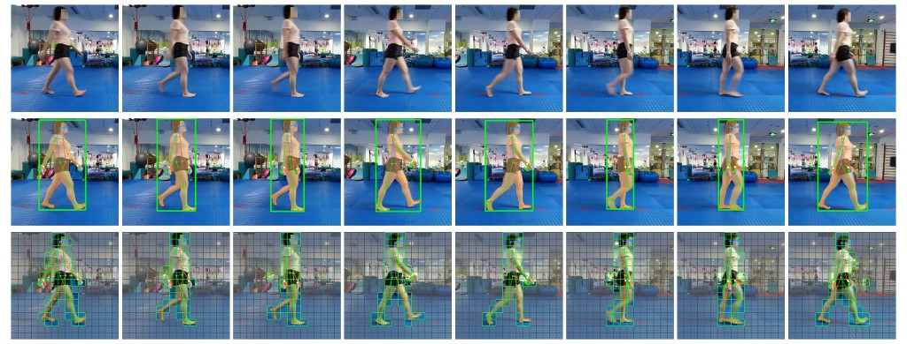
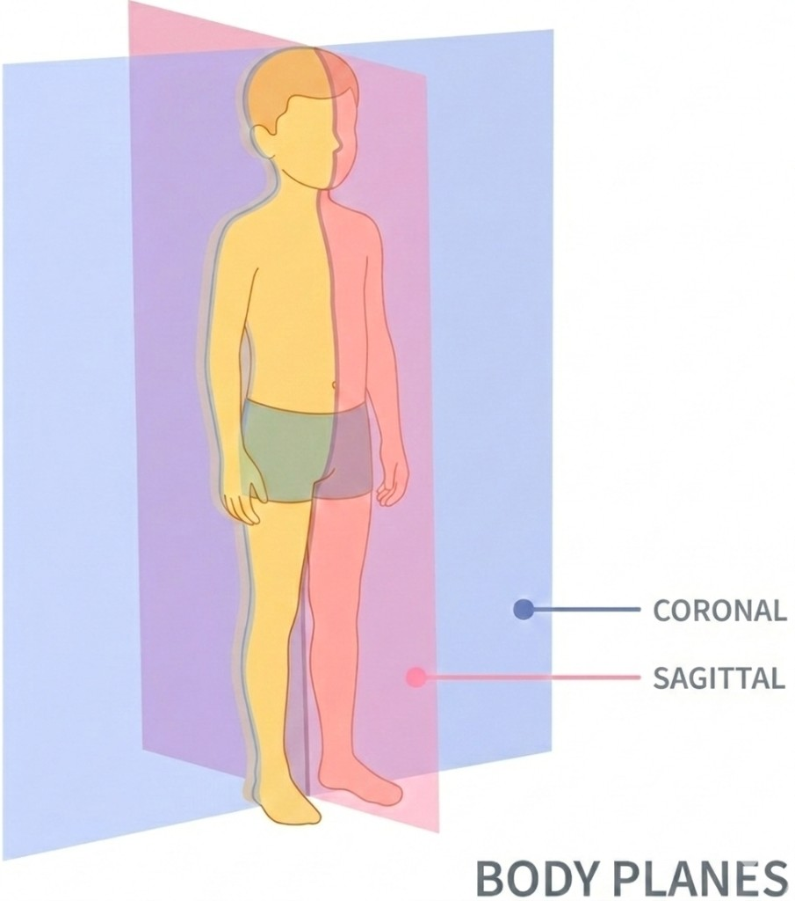
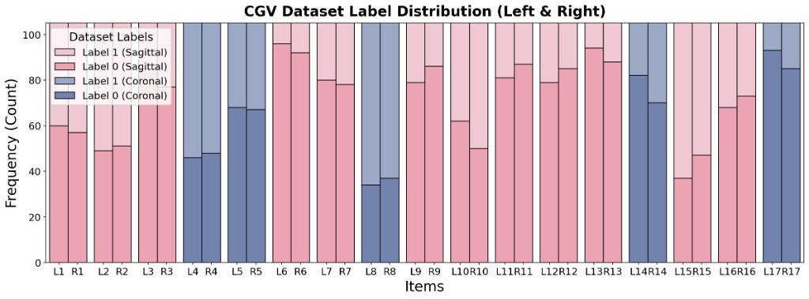
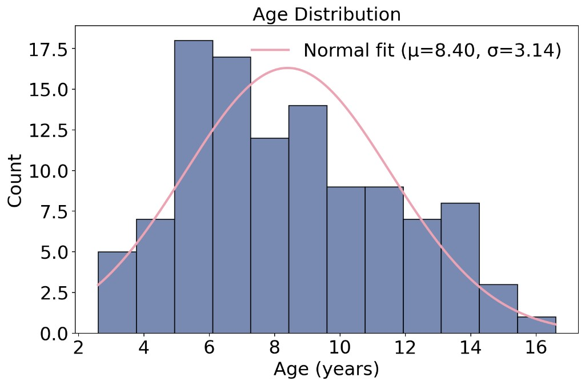
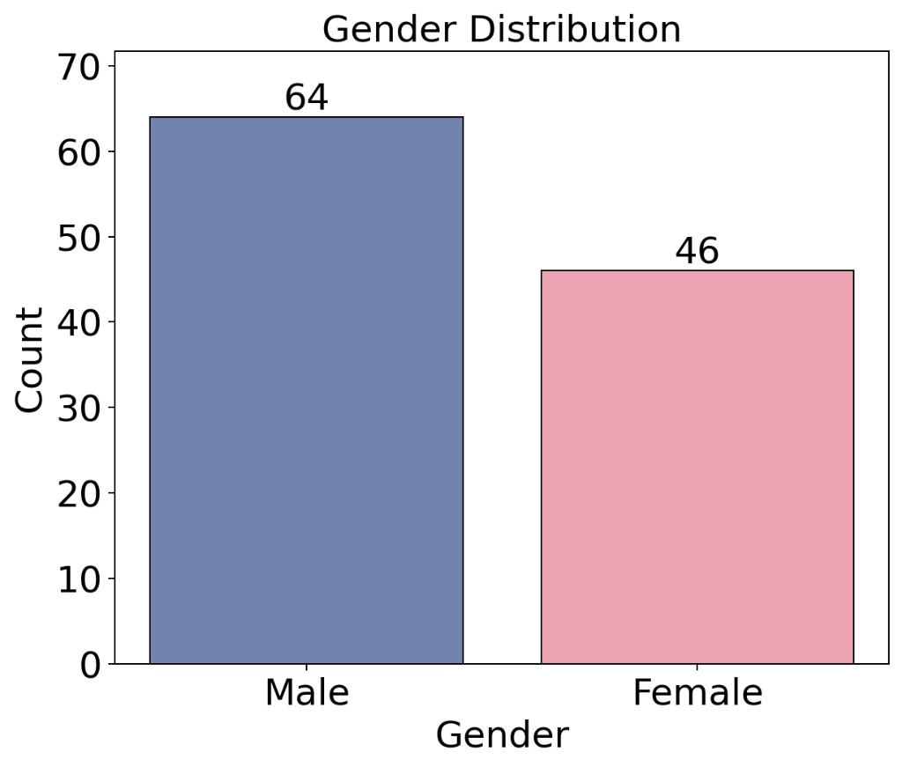
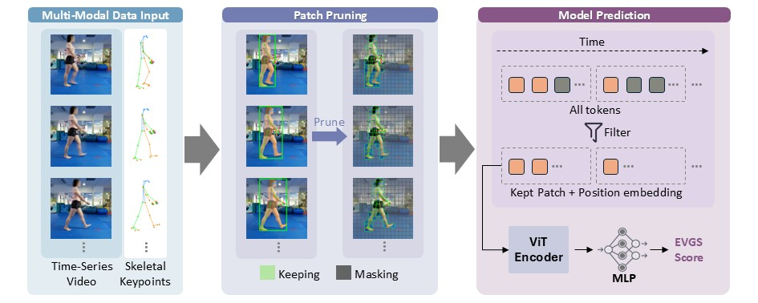
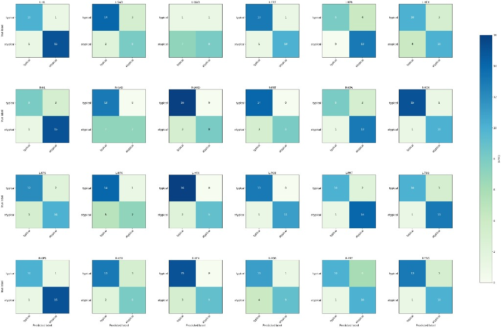

📝 Abstract
We introduce a new problem domain for human action recognition: the fine-grained analysis of children's gait behaviors from standard RGB video. We specifically target the ambulatory patterns of children aged 3–17 years. Such behaviors arise naturally in the diagnosis and treatment of several critical developmental and neuromuscular disorders, such as cerebral palsy and hemiplegia. Despite their clinical value, current 3D sensor-based gait analysis systems are expensive, intrusive, and often impractical for young subjects. To address this, we introduce a new dataset comprising over 1,100 high-frame-rate (60 FPS) video sequences from 110 subjects, accompanied by synchronized, anonymized pose sequences. In each session, the child performs a 5-second "walk-around" task, capturing the gait cycle from multiple viewpoints. Crucially, we demonstrate that current state-of-the-art approaches, including gait foundation models and Multimodal Large Language Models (MLLMs), fail to effectively resolve these clinical nuances. We identify the key technical challenges in analyzing these erratic and subtle motor patterns and describe a unified end-to-end framework for decoding fundamental components of pediatric gait. Through comprehensive experimental results, we demonstrate the potential of this dataset to drive novel research questions and establish a rigorous baseline for automated child gait assessment.
✅ Contributions
Children Gait Video (CGV) Dataset
We introduce the Children Gait Video (CGV) dataset, the largest repository of multi-camera gait videos of children with developmental motor conditions, containing both clinically relevant assessments (EVGS and GVS) and rich frame-level annotations.
Benchmarking SoTA VLMs
We provide the first comprehensive assessment of the ability of SoTA open and closed VLMs to decode the subtle signs of gait abnormalities from video, and find that out-of-the-box models are ineffective for this task.
ChildGait-Video
We present ChildGait-Video, a novel video analysis method that is the current SoTA for the automated inference of EVGS and GVS scores from children's videos.
📊 The Children Gait Video (CGV) Dataset
CGV is the first open-sourced children gait video dataset. After obtaining IRB approval from affiliated hospitals, we recorded children performing a short walking task and annotated each limb with the 17 Edinburgh Visual Gait Score (EVGS) sub-items, along with rich frame-level masks, bounding boxes and anatomical keypoints.
1 How the Data Was Collected
Videos are recorded at a children's hospital in Asia using smartphone and action cameras positioned simultaneously to capture two body planes. A primary camera sits at the terminus of an 8-meter walkway to record the coronal (frontal & posterior) view, while a secondary camera is oriented orthogonally toward the center of the walkway to capture the sagittal (lateral) view. The lateral camera is placed far enough that its field of view covers the middle four meters of the trial space — calibrated to guarantee 2–3 complete gait cycles per subject. In each session the child performs a brief 3–5 second walk, captured at high frame rate.
2 How the Data Was Annotated
Every video receives detailed per-frame and per-video annotations. We first use SAM 3 to detect the subject's body bounding box and instance segmentation mask (manually selected by human annotators), and Sapiens-2B to estimate the 2D anatomical keypoints (manually adjusted by annotators). The clinical EVGS sub-items are then graded by an experienced pediatrician in the author team and reviewed by a senior pediatrician with 40 years of clinical experience, while diagnosis results are traced from each patient's follow-up records.

- Bounding boxes & segmentation masks from SAM 3, human-verified.
- 2D keypoints from Sapiens-2B, manually refined for the developing body.
- 17 EVGS sub-items per limb graded by expert pediatricians.
- Irreversible de-identification: RetinaFace + SAM 3 mosaic on all identifiable regions.
3 The 17 EVGS Scoring Items
Each limb is assessed on 17 fine-grained gait parameters drawn from the Edinburgh Visual Gait Score, spanning the foot, ankle, knee, hip, pelvis and trunk across both the sagittal and coronal planes.

Hover (or tap) a box / marker to zoom in and read the detailed scoring criteria.
4 Label & Demographic Distribution
The standard EVGS protocol uses a three-point ordinal scale (0: normal, 1: moderate deviation, 2: marked deviation). Because severe deviations (score 2) are rare, the natural distribution of pediatric gait pathologies is severely imbalanced. To build a robust computational benchmark, we binarize the task by merging scores 1 and 2, framing each parameter as a binary "typical" vs. "atypical" classification. The chart below shows the per-item label distribution across the left (L) and right (R) limbs, separated into sagittal and coronal scoring items.
Beyond the gait labels, the 110 participants span a clinically relevant developmental window and a nearly balanced gender profile, providing sufficient diversity for training and evaluating visual gait analysis models.

(a) Per-item label distribution (Label 0 vs. Label 1) for both limbs and body planes
(b) Age distribution (μ = 8.40, σ = 3.14)
(c) Gender distribution (64 male / 46 female)🧪 Decoding Children's Gait
Can today's best models already decode children's gait? We benchmark three families of approaches on the CGV test split — zero-shot MLLMs, a fine-tuned video VLM, and video & gait analysis models — reporting per-item and per-limb accuracy across all 34 bilateral EVGS items. All values are percentages (%); toggle between the left and right limb and scroll horizontally in any table below.
Why a purpose-built method is needed
Across every family, off-the-shelf and fine-tuned models plateau between roughly 45% and 72% accuracy — far below clinical reliability and, for most baselines, only marginally above the 50% random-guess level. None reliably resolve the subtle, phase-specific deviations that define pediatric gait pathology, motivating a dedicated, anatomy-aware approach.
🚀 Our Method: ChildGait-Video
Direct fine-tuning is bounded by a model's susceptibility to clinical background noise and its lack of gait awareness. To fully unleash the video foundation model for pediatric gait, we propose a two-stage adaptation paradigm, ChildGait-Video, that injects explicit anatomical priors through token-level kinematic prompting and constrains attention through mask-guided patch pruning.
1 The ChildGait-Video Framework
ChildGait-Video reuses the same vision encoder as VideoMAE v2, followed by an MLP head that predicts the EVGS score. We first pre-train on Kinetics-710 to acquire generic human motion recognition, then supervise fine-tune on the CGV dataset with the two components below, so the model learns subtle gait anomalies while focusing on the gait transition.

Token-Level Kinematic Prompting
We render the extracted joint coordinates and their connectivity graph directly onto each RGB frame. After ViT patchification, the patches covering the rendered skeleton encode both local anatomical topology and appearance, acting as kinematic prompts mixed with standard visual tokens — bridging the model's missing anatomical priors of the developing body.
Mask-Guided Patch Pruning
Gait clips are cluttered with walking aids, parallel bars and attending therapists. Using binary instance segmentation masks, we deterministically keep a patch only if it holds enough foreground pixels. This drops the vast majority of background tokens, forcing the transformer's self-attention onto the subject's gait while substantially cutting fine-tuning cost.
2 State-of-the-Art Results
We compare fine-tuned BiggerGait, fine-tuned VideoMAE v2 and ChildGait-Video on the CGV test split. Toggle between the left and right limb; all values are percentages (%), with L/R-F1 the average F1-score across all items.
3 Confusion Matrices
We visualize confusion matrices across scoring items spanning both the sagittal and coronal views of the EVGS. The high concentration of predictions along the main diagonal and the low off-diagonal error rate indicate that ChildGait-Video maintains high sensitivity and effectively regularizes self-attention to focus on gait kinematics.

4 Ablation: Number of Input Frames
The temporal resolution of the input sequence determines how well the model captures the dynamic evolution of gait pathologies. We vary the number of sampled frames T ∈ {8, 16, 32} at a constant 30 FPS and evaluate on item L/R-IC; all variants use the proposed mask-guided pruning and token-level kinematic prompting.
| Frames (T) | Temporal Span (s) | Accuracy (%) | F1-Score |
|---|---|---|---|
| 8 | 0.26 | 74.1 | 0.73 |
| 16 Default | 0.53 | 87.0 | 0.89 |
| 32 | 1.06 | 90.7 | 0.92 |
Ablation on the number of input frames, evaluated on item L/R-IC (Accuracy and F1-Score).
🏆 CVPR 2026 Workshop: Computer Vision for Children (CV4CHL)
This work is part of our broader effort to advance computer vision for pediatric health. At CVPR 2026, we organized the Workshop on Computer Vision for Children (CV4CHL), which hosted The 1st AI Children Challenge — bringing the community together to build and benchmark vision systems for children-centered tasks.
BibTeX
@article{shen2026decoding,
title = {Decoding Children's Gait Behavior},
author = {Shen, Yifan and Li, Boyi and Huang, Meihuan and Liu, Yuanzhe and Cao, Xu and Jin, Jinyang and Li, Zhengyuan and Liu, Anglin and Kim, Junho and Zhu, Jingyuan and Lan, Fangzhou and Cao, Jianguo and Chen, Jintai and Lourentzou, Ismini and Rehg, James M.},
journal = {arXiv preprint arXiv:XXXX.XXXXX},
year = {2026}
}
@inproceedings{li20261st,
title = {The 1st AI Children Challenge},
author = {Li, Boyi and Shen, Yifan and Yang, Houze and Cao, Xu and Yun, Guojun and Gao, Li and Chen, Turong and Xu, Long and Cao, Jianguo and Huang, Meihuan},
booktitle = {Proceedings of the IEEE/CVF Conference on Computer Vision and Pattern Recognition},
pages = {5564--5570},
year = {2026}
}